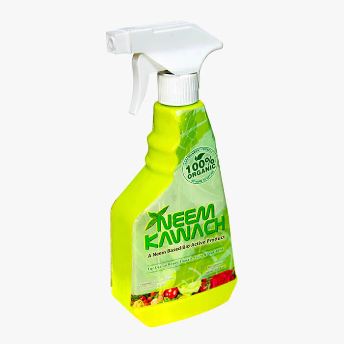

Services
We Offer
Organic products


FAQ'S
What are the advantages of ideal crop production
It restores the natural nitrogen fixing ability of the soil, improves microbial activity, balances salinity and acidity levels of the soil, prevent soil erosion etc.
How is soil useful in agriculture?
Soil is the first basic requirement while farming because it is the main source of nutrients to the plants. Healthy soil produces the most food. The soil is considered as a living, dynamic ecosystem that helps in converting dead, decayed matter into nutrients with the presence of microorganisms
What are the factors that affect crop production?
The crop production cycle depends on two major factors, i.e. internal and external factors. The internal factors that influence the crop growth relate to the genetic capability of the seed or variety of crop being cultivated and the desirable characteristics for proper production are:
- Excellent yielding ability
- Early maturity
- Resistance to diseases and lodging
- Tolerance to drought and pests
- Good chemical composition like oil and protein
- Tolerant to soil pH levels
- Good quality of produce or grains
- Good quality of straw